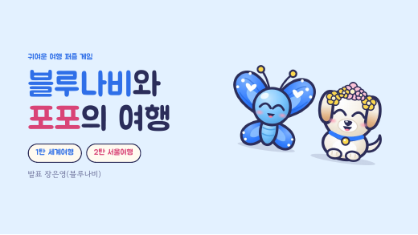
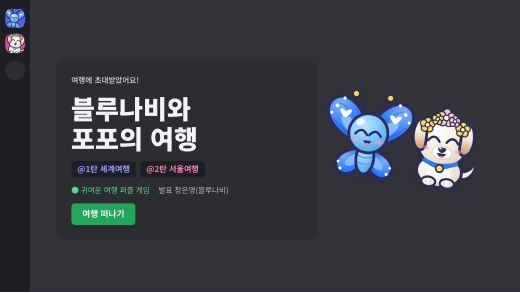
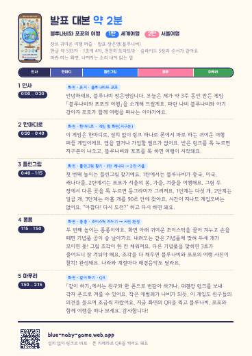
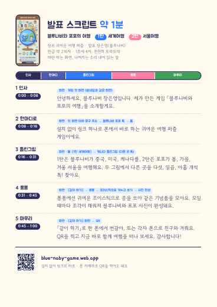
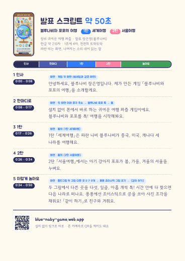
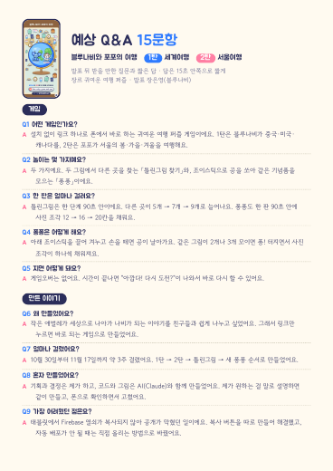
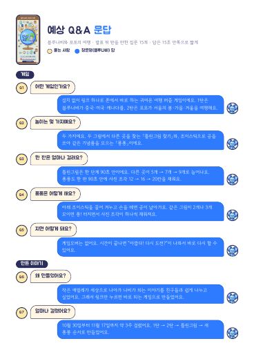

발표 장은영(블루나비) · 게임 blue-naby-game.web.app · 2026-11-18 정리 (게임 v5.1.0) · 글 목록은 00_목록.md
16:9 · 5장. 웹 슬라이드에는 발표자 노트(1분 스크립트)가 있고, 공유 → 내보내기에서 PowerPoint로도 받을 수 있어요.

게임과 같은 크림·남색·파랑, 주아·고운돋움 글꼴

어두운 채팅 화면 느낌, 채널·메시지 모양
A4 한 쪽 · 슬라이드 5장과 같은 순서 · 파란 띠는 화면, 나머지는 읽는 말

한글 533자 · 시간이 넉넉할 때

한글 216자 · 기본 발표 (웹 슬라이드 노트와 같음)

아주 짧게 소개할 때
Q6(왜 만들었나)·Q15(앞으로 계획)의 답은 초안이에요. 내 말로 고쳐 쓰세요.

질문·답 목록 · A4 2쪽

채팅 말풍선 모양 · A4 2쪽
함께 쓰면 좋은 것 (저장소의 docs/presentation/): 미리보기 영상 세로 · 가로 (약 15초), QR 그림 qr.png
docs/presentation/